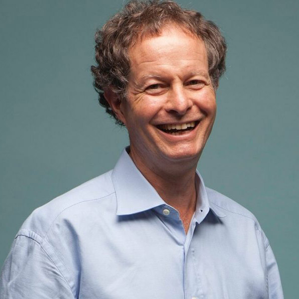

John Marckey

.Năm 1978, John Mackey và bạn gái Renee Lawson đã cùng nhau mở cửa hàng thực phẩm chay đầu tiên của họ với mong muốn đơn giản là kinh doanh kiếm tiền đồng thời mang đến cho mọi người một đời sống khỏe mạnh bằng chế độ ăn uống lành mạnh hơn. Trong suy nghĩ khi đó của chàng sinh viên bỏ học 25 tuổi râu tóc bù xù, lợi nhuận là một “tội lỗi cần thiết”.
Trong một căn hộ cũ kỹ theo phong cách Victoria tại thành phố Austin, tiểu bang Texas, cặp đôi Mackey - Renee tự sản xuất, bán thức ăn và nông phẩm với số lượng lớn. Buổi tối, họ ngủ luôn trên tấm đệm ở văn phòng trên lầu ba. Họ đặt tên cửa hàng nhỏ của mình là Safer Way, một cách chơi chữ với tên chuỗi cửa hàng khổng lồ Safeway. Tuy cả hai không nhận một đồng tiền lương nào trong năm đầu hoạt động, nhưng Safer Way vẫn bị lỗ mất nửa số vốn: 23.000/45.000 đô-la đầu tư ban đầu. Năm thứ hai, họ kiếm được năm nghìn đô-la lợi nhuận. Họ nhận ra cửa hàng khó có khả năng cạnh tranh lâu dài vì nó quá nhỏ. “Dù cửa hàng bị thua lỗ nặng nề nhưng tôi vẫn cố gắng thuyết phục các nhà đầu tư ban đầu rót thêm vốn để mở rộng quy mô cửa hàng”, Mackey nhớ lại. “Tất nhiên họ không cho đó là một ý kiến hay.”
Các nhà đầu tư yêu cầu Mackey tiếp tục kinh doanh ở cửa hàng đó và chứng minh ý tưởng của anh có thể thành công. Mackey thuyết phục họ: “Tôi nghĩ nếu chúng ta không thay đổi, về lâu dài ắt hẳn chúng ta sẽ thất bại. Chúng ta cần một địa điểm rộng lớn hơn.” Nghe vậy, họ nói với Mackey: “Nếu anh có thể tìm được một người nào đó sẵn sàng đầu tư thêm từ 25.000 đến 50.000 đô-la thì chúng tôi sẽ cân nhắc lại vấn đề này.” Mackey biết đó là một cách từ chối khéo vì “họ nghĩ rằng tôi chẳng thể kiếm được một người nào khờ khạo đến mức chịu bỏ thêm tiền vào cái cửa hàng này cả”.
Nhưng các nhà đầu tư đó đã đánh giá thấp khả năng thuyết phục của Mackey. Mackey đã thuyết phục được một người bạn thường chơi bóng rổ cùng rót thêm vốn vào cửa hàng. Với số tiền mặt này, Mackey sáp nhập cửa hàng của mình với một đối thủ trong lĩnh vực kinh doanh thực phẩm tự nhiên[7] là Clarksville Natural Grocery. Năm 1980, họ khai trương siêu thị Whole Foods Market đầu tiên tại Austin ở một nơi trước đó là hộp đêm. Cửa hàng mới rộng hơn 920m2 đã đưa Whole Foods Market gia nhập thị trường siêu thị thực phẩm tự nhiên ở Mỹ.
Cửa hàng nhanh chóng thành công ngay khi vừa khai trương. Mackey phát biểu với sự phấn khích: “Chúng tôi thu được lợi nhuận gấp ba lần lúc trước chỉ trong buổi chiều đầu tiên. Đó là một khởi đầu tốt đẹp bởi chúng tôi đã cạn vốn khi mở cửa hàng này. Chúng tôi thiếu tiền và không thể trả nổi lương cho nhân viên. Vì vậy, chúng tôi buộc phải mở cửa hàng bán thực phẩm để có thể trả lương cho họ. Chúng tôi không có quầy bán thịt, cũng không bán bia rượu. Chúng tôi chỉ cố gắng lấp đầy cửa tiệm với tất cả những gì sẵn có. May thay cửa hàng này lại thành công lớn.”
Chỉ trong vài năm, siêu thị Whole Foods Market đã trở thành siêu thị thực phẩm tự nhiên lớn nhất nước Mỹ. Nhưng bất cứ công việc kinh doanh nào cũng luôn tiềm ẩn những khó khăn và thách thức. Sau khi siêu thị Whole Foods hoạt động được tám tháng, cả thành phố Austin đã phải hứng chịu một trận lũ lụt tồi tệ nhất trong 100 năm qua. Dòng lũ cao gần 2,5m tràn vào cửa hàng, gần như cuốn phăng mọi thành quả kinh doanh của Mackey và các cộng sự. Nhưng trong cái rủi lại có cái may. Khi cơn lũ qua đi, các khách hàng đã quay trở lại, nhiệt tình phụ giúp dọn dẹp, sắp xếp mọi thứ. Nhờ vậy, siêu thị nhanh chóng hoạt động bình thường như trước. Chính sự kiện này đã khiến Mackey tin rằng ông không nên đặt toàn bộ công việc kinh doanh vào một cửa hàng duy nhất. Việc mở rộng hệ thống siêu thị là một yêu cầu cấp bách ngay lúc đó.
Ngày nay, Whole Foods Market đã có hơn 300 siêu thị ở vùng Bắc Mỹ và Anh Quốc. Năm 2011, công ty có tổng cộng 61.000 nhân viên và đạt lợi nhuận hơn 10 tỷ đô-la. Tuy nhiên, thành công quan trọng nhất của nhà sáng lập kiêm CEO Mackey là ông đã góp phần thay đổi chế độ ăn uống hằng ngày của hàng triệu người tiêu dùng cũng như cách thức mà người Mỹ sản xuất, mua sắm và tiêu thụ thực phẩm.
Thành công nổi bật của Whole Foods đã thay đổi cả những đối thủ kỳ cựu trong ngành công nghiệp thực phẩm. Giờ đây, bạn sẽ dễ dàng tìm thấy những thực phẩm có nguồn gốc tự nhiên trên kệ hàng của bất cứ siêu thị nào. Chính Mackey cũng ngạc nhiên về những thay đổi mà họ tạo ra đối với toàn bộ hệ thống phân phối thực phẩm. “Hai mươi năm trước, nếu có ai đó nói với tôi rằng siêu thị Walmart sẽ là một trong những nhà cung cấp thực phẩm tự nhiên hàng đầu thế giới, tôi sẽ nghĩ điều đó thật buồn cười”, ông nói. “Nhưng tôi đã nhìn thấy những thay đổi lớn.”
Không chỉ có siêu thị Whole Foods mới thành công ngoạn mục mà chính bản thân Mackey cũng có sự thay đổi. Một nhà văn từng ví von rằng: “Sự phát triển của một tập đoàn cũng giống như sự phát triển của người tạo ra nó; nó là hiện thân cho những giấc mơ, những thói quen, những mâu thuẫn và những nông nổi của chính con người đó, cũng như cho bất cứ điều gì anh ta đọc và cảm nhận.”
Mackey kể rằng, ông từng là một người cánh tả, nhưng giờ thì ông đã trở thành một tín đồ của “chủ nghĩa tư bản” và vô cùng ngưỡng mộ Ayn Rand, Milton Friedman và Ronald Reagan. Một trong những niềm đam mê của ông được chính ông gọi là “Chủ nghĩa tư bản nhận thức” – một nỗ lực để giúp mọi người nhận thức rõ hơn sự thật là việc kinh doanh đã tạo ra những giá trị to lớn cho mọi người – cho nhân viên, khách hàng, các nhà cung cấp và cả cộng đồng. Cốt lõi của niềm tin này nằm ở việc yêu cầu mỗi doanh nghiệp hãy theo đuổi một mục tiêu cao cả hơn việc tối đa lợi nhuận hoặc chia sẻ chi phí.
Đó thật sự là một niềm tin tốt đẹp để bắt đầu việc kinh doanh.
“Mục đích” là từ quan trọng và to lớn đối với ông. Vậy mục đích của Whole Foods Market đã tiến hóa như thế nào theo thời gian?
Qua thời gian, mục đích của Whole Foods Market đã tiến hóa rất nhiều lần. Tôi thường nhận được hai câu hỏi quen thuộc từ giới nhà báo. Câu hỏi thứ nhất là: “Ôi trời, có bao giờ ông nghĩ công ty mình sẽ phát triển lớn đến mức này khi ông khởi nghiệp không?” Câu trả lời của tôi dĩ nhiên là không. Câu hỏi thứ hai là: “Có phải ông đã sớm đặt ra mục đích như vậy ngay từ khi khởi nghiệp không?” Dĩ nhiên câu trả lời cũng là không. Điều tôi muốn nói là một doanh nghiệp sẽ tiến hóa theo thời gian và mục đích cũng sẽ theo đó mà phát triển.
Khi mới thành lập công ty, mục đích của chúng tôi chỉ đơn giản là bán những thực phẩm có lợi cho sức khỏe của người tiêu dùng và thân thiện hơn với môi trường. Nhờ vậy, chúng tôi có thể kiếm sống và duy trì việc kinh doanh. Khi công ty tăng trưởng và tiến hóa, mục đích cũng trải qua nhiều thay đổi. Tôi vừa có một buổi nói chuyện quan trọng tại buổi họp định kỳ ba năm một lần của toàn công ty để nói về mục đích tiếp theo của Whole Foods. Mục đích ban đầu của Whole Foods Market đã kéo dài đến năm 1985 mới thay đổi.
Đó cũng là thời điểm mà chúng tôi phải đương đầu với khủng hoảng. Có tới sáu cửa hàng cũ và một vài cửa hàng mới bị thua lỗ. Trên thực tế, đó là lần công ty thua lỗ đầu tiên. Việc này thực sự đã khiến một trong các thành viên sáng lập công ty thất vọng và rời bỏ công ty. Trước đó, nội bộ công ty cũng bị chia rẽ và để chấm dứt tình trạng lục đục này, chúng tôi đã thông qua một quá trình xác định tầm nhìn mới. Chúng tôi mời một cố vấn đến để cùng nhau thiết lập lại mục đích và sứ mệnh công ty. Khi đó, công ty vẫn còn nhỏ bé. Sau khi thống nhất với nhau, chúng tôi đúc kết tầm nhìn của công ty thành một bản sứ mệnh mà chúng tôi gọi nôm na là bản “tuyên ngôn độc lập”. Đó là lần đầu tiên chúng tôi thể hiện những lý tưởng của công ty, phát biểu ý tưởng của mình trước các bên liên quan mật thiết: khách hàng, các thành viên công ty, các nhà cung cấp, các nhà đầu tư, toàn thể cộng đồng và cả môi trường nữa.
Trong bản tuyên bố đó, chúng tôi khẳng định sẽ cố gắng tạo nên giá trị cho tất cả các bên.
Cuộc thay đổi tiếp theo xảy ra khi chúng tôi nhận thấy nội dung bản tuyên bố chưa súc tích và quyết định đúc kết nó lại thành năm giá trị cốt lõi đóng vai trò như một con đường ngắn nhất đưa doanh nghiệp đến thành công: Thứ nhất, bán sản phẩm hữu cơ tự nhiên với chất lượng tốt nhất; thứ hai, tạo sự hài lòng cho khách hàng; thứ ba, phấn đấu vì hạnh phúc và sự phát triển của các thành viên; thứ tư, làm giàu chính đáng từ lợi nhuận và sự tăng trưởng của công ty; thứ năm, thực hiện tốt vai trò công dân với cộng đồng và môi trường. Đây là năm giá trị cốt lõi của chúng tôi. Với những giá trị đó, công ty đã tăng được vốn để đầu tư, niêm yết cổ phiếu đại chúng lần đầu, bắt đầu một số thương vụ sáp nhập và sau đó là tăng trưởng nhanh chóng. Những giá trị này đã đồng hành với công ty trong suốt 10, 15 năm qua. Vài năm trước, mục đích của Whole Foods Market lại có sự thay đổi. Lần này, chúng tôi bổ sung hai giá trị cốt lõi. Trước đó các nhà cung cấp cảm thấy chúng tôi chưa chú tâm đến họ lắm, nên chúng tôi đã cam kết đưa thêm giá trị cốt lõi là sự hợp tác đôi bên cùng có lợi với các nhà cung cấp. Sau đó, chúng tôi lại đưa ra chương trình giáo dục ăn uống lành mạnh. Chúng tôi muốn các cổ đông biết rằng công ty đang cố gắng mang đến cho họ kiến thức về lối sống lành mạnh.
Trong bài phát biểu của mình, tôi đã xác lập bốn mục tiêu nhân văn, trong đó cao cả nhất chính là mục tiêu anh dũng. Tôi đã đúc kết điều đó dựa trên những lý tưởng lớn lao mà con người luôn hướng tới là: Chân, Thiện, Mỹ. Tôi đã bổ sung “tinh thần anh dũng” vào bản tuyên bố của công ty. Các thành viên trong công ty ý thức rất rõ mục tiêu anh dũng là mục tiêu thể hiện rõ nét nhất nền tảng phát triển của công ty: Hãy dũng cảm thay đổi và hoàn thiện thế giới. Thúc đẩy hệ thống nông nghiệp phát triển một cách bền vững hơn, đồng thời trở nên sáng tạo hơn. Chúng tôi cũng cố gắng hướng mọi người đến một lối sống lành mạnh hơn vì chính lối sống của người Mỹ là nguyên nhân gây ra những vấn đề nghiêm trọng tồn tại trong xã hội như các căn bệnh về tim mạch, ung thư và tiểu đường. Chúng tôi đã, đang cố gắng làm nhiều hơn nữa để giúp mọi người thay đổi thói quen ăn uống nhằm phòng tránh bệnh tật và có một sức khỏe tối ưu.
Mục tiêu thứ ba liên quan đến Quỹ Từ thiện Whole Planet Foundation của chúng tôi. Giờ đây, Quỹ Từ thiện của chúng tôi đã có mặt trên 29 quốc gia và dự định sẽ tăng con số này lên 56 quốc gia trong vài năm tới. Chúng tôi đã giúp đỡ hàng trăm nghìn người thoát khỏi đói nghèo nhờ việc cộng tác với Ngân hàng Grameen của Ấn Độ và người sáng lập nó: Muhammad Yunus.
Giúp mọi người nhận thức đúng đắn về bản chất của kinh doanh và chủ nghĩa tư bản là mục tiêu cao cả thứ tư. Cả hai khái niệm này đều bị những nhà phê bình và phe chống đối làm sai lệch. Chúng tôi đang cố gắng tái xây dựng thương hiệu, quảng bá và giúp mọi người nhận thức đúng đắn về kinh doanh, về chủ nghĩa tư bản. Đó chính là bốn mục đích cao cả mà chúng tôi đã xác định. Cả bốn mục đích này đều là những mục đích táo bạo. Theo tôi thì tính anh dũng chính là điều mà cả công ty đang hướng đến.
Tại sao mục đích lại quan trọng với một doanh nghiệp như vậy?
Trong cuộc sống, việc có mục đích rất quan trọng. Nói cách khác, doanh nghiệp cũng giống với các cộng đồng khác ở khía cạnh con người luôn tìm kiếm hạnh phúc trong cộng đồng của mình. Những lý tưởng động viên con người trong cuộc sống thường nhật cũng tương tự như những lý tưởng khuyến khích con người làm việc cho một tổ chức. Để thật sự là một con người, để là hiện thân của những nguyện vọng của con người, thì việc doanh nghiệp có mục đích là rất quan trọng. Việc nói với mọi người rằng mục đích của công ty là tối ưu hóa lợi nhuận và giá trị cổ phần chẳng tạo cảm hứng được. Điều đó có thể là một động lực lớn cho những người làm việc ở Phố Wall nhưng với hầu hết mọi người thì chúng chẳng mang lại sự hứng khởi nào cả, họ mong muốn những giá trị ưu việt hơn. Họ muốn tin tưởng và hiểu được việc họ đang làm có ích cho cộng đồng và góp phần làm thế giới trở nên tốt đẹp ra sao.
Mục đích có thể truyền cảm hứng và giải phóng sự sáng tạo cho con người. Khi mọi người thực sự tâm huyết với mục đích của doanh nghiệp, họ sẽ muốn gắn bó sâu sắc và sáng tạo hết mình cho công việc. Điều này tốt cho công ty và hiển nhiên cũng tốt cho tất cả đối tác của công ty. Đó là nguyên lý đầu tiên của chủ nghĩa tư bản tự giác.
Nhiều doanh nghiệp gặp khó khăn trong việc tìm ra mục đích của họ, đặc biệt là những mục đích mang tính động viên một cách tự nhiên. Ông đã làm gì để có được sự đồng thuận của mọi người đối với mục đích chung của Whole Foods?
Khi đưa ra những giá trị cốt lõi cùng với bản tuyên bố ban đầu, thực sự chúng tôi đang ở trong trạng thái chuyển đổi. Lúc đó, chúng tôi vẫn còn là một công ty nhỏ nhưng chúng tôi có 60 thành viên bán hàng – chiếm 10% nhân sự công ty vào năm 1985 – nhiệt tình giúp chúng tôi tìm ra sứ mệnh và tạo nên những giá trị cốt lõi của riêng mình. Không chỉ thành viên bán hàng mà cả khách hàng, nhà cung cấp, nhà đầu tư đều có tác động đến việc phát triển mục đích. Tất cả họ tương tác với doanh nghiệp và đặt kỳ vọng vào công ty. Họ có những khát khao và nhu cầu của mình. Doanh nghiệp phải tương tác với những điều đó. Whole Foods có một văn hóa đoàn kết và khuyến khích mọi người tham gia đóng góp.
Đôi khi tôi nghĩ rằng công việc của tôi là diễn giải văn hóa đó cho mọi người. Để tôi cho bạn một ví dụ. Khi tôi đưa ra bốn mục tiêu cao hơn dựa trên tinh thần anh dũng, tôi cũng không nghĩ rằng Whole Foods là những người hùng đâu. Tôi chỉ nghĩ chúng tôi là những người làm việc tốt. Chúng tôi là chuỗi cửa hàng bán lẻ, về cơ bản là một công ty kinh doanh dịch vụ, cố gắng chăm lo cho khách hàng của mình. Để làm được điều đó, công ty phải là một nơi làm việc tốt. Chúng tôi luôn tuyển dụng những thành viên tốt nhất mà mình tìm thấy và đảm bảo rằng họ được đào tạo tốt, đồng thời thường xuyên động viên họ dành sự quan tâm cho khách hàng. Tôi cảm thấy chúng tôi thực sự là những người chăm sóc khách hàng hoặc nói một cách trừu tượng hơn, chúng tôi đang theo đuổi điều thiện. Khi đi xung quanh trò chuyện với các thành viên và khách hàng, tôi nhận ra họ còn có những khát vọng lớn lao hơn cho Whole Foods mà tôi chưa từng nghĩ đến. Họ thường nói với tôi rằng tôi đánh giá công ty chưa đúng tầm. Whole Foods thực sự có những sứ mệnh cao cả hơn những gì tôi đang đặt ra và tôi cần phải thay đổi chúng. Vì vậy, tôi cho rằng tất cả các nhân tố trong một tổ chức đều cùng tiến hóa và họ làm được điều đó vì đam mê của chính họ và sự tương tác giữa họ với doanh nghiệp. Tất nhiên, khả năng lãnh đạo cũng theo đó mà phát triển.
Những quyết định này được đưa ra thông qua sự đối thoại. Một doanh nghiệp luôn cần tương tác với các nhân tố bên trong nó. Khi một người nào đó nảy ra ý tưởng, tôi sẽ nắm bắt và trao đổi ý tưởng ấy với một nhóm lớn hơn. Khi đó bạn sẽ nhìn thấy cách mà mọi người phản ứng với ý tưởng đó. Họ có đồng thuận với ý tưởng đó không? Họ đồng ý điều gì? Và bất đồng điều gì? Khi tôi tuyên bố niềm tin rằng mục đích sâu xa nhất của tôi là làm dịch vụ, là việc theo đuổi cái thiện thì các thành viên khác đã lên tiếng phản đối. Họ cho rằng: “Không. Chúng tôi nghĩ nó còn hơn thế nữa. Mục đích của chúng ta là thay đổi và hoàn thiện thế giới. Anh đang đánh giá sai chúng ta rồi.”
Những điều đó nghe rất hay và có vẻ rất tốt đẹp. Ông đã biến nó thành hiện thực bằng cách nào?
Tôi là người đặt ra mục đích đó và phổ biến nó cho mọi người, mọi người cùng nhau biến nó thành hiện thực. Whole Foods không giống những công ty khác. Nó không phải là một tổ chức theo cấp bậc, nơi mà CEO đưa ra sứ mệnh và sau đó ban hành mệnh lệnh cho mọi người. Cách đây một tháng, tại buổi họp định kỳ của công ty với hơn tám trăm nhân sự cấp lãnh đạo tham dự, tôi đã nói về những sứ mệnh cao cả đó. Giờ đây, chúng đã lan rộng và truyền cảm hứng cho nhiều người. Họ ra ngoài và thực hiện những mục tiêu đó theo cách sáng tạo, độc đáo của riêng họ. Sự đổi mới thường xuyên diễn ra ở Whole Foods bởi chúng tôi không phải là công ty trọng cấp bậc hay chuyên quyền. Để thực hiện được mục đích chung, tôi đã cho phép và khích lệ mọi người đóng góp công sức của mình. Tuy vậy, để biến mục đích thành hiện thực thì cần có sự đồng thuận của tập thể để họ có thể cống hiến và tin tưởng vào những gì họ đang làm.
Tôi vẫn có thể phát biểu những gì tôi muốn dù mục đích đó không được đồng thuận, nhưng sẽ chẳng có gì được thực hiện cả. Trong trường hợp của Whole Foods, mọi người hứng khởi với mục đích mà tôi đề ra, rồi họ ra ngoài và thực hiện chúng. Chúng tôi có 60.000 nhân viên và tôi không nói rằng tất cả nhân viên đều làm việc nhiệt huyết. Nhưng chắc chắn rằng phần đông trong số họ thực sự đam mê công việc và họ đã sống đúng với những giá trị cốt lõi của công ty từng ngày một, thể hiện chúng với khách hàng và những nhà cung cấp của chúng tôi. Đó là cách để mục đích được thực hiện ở Whole Foods. Anh truyền cảm hứng cho các thành viên, họ lan truyền điều đó tới các nhân tố tương tác và mục đích sẽ trở thành hiện thực.
Trở lại với những ngày đầu tiên khi mới thành lập, ý tưởng ban đầu của Whole Foods có mang tính đột phá không?
Tôi không nghĩ về công ty theo cách ấy vì nghe cứ như thể một chuyên viên đang trình bày báo cáo vậy. Tuy nhiên, theo cách nói của anh thì đúng. Whole Foods có một mô hình kinh doanh đột phá. Nhưng chúng tôi không nghĩ về nó theo cách đó. Chúng tôi không phải là một nhóm thạc sĩ kinh tế cố gắng tìm kiếm mô hình kinh doanh táo bạo. Chúng tôi là một doanh nghiệp hoạt động có mục đích và luôn nỗ lực hoàn thiện sứ mệnh. Dĩ nhiên có rất nhiều việc chúng tôi đang làm mang tính đột phá nhưng theo một cách tình cờ chứ không hề cố ý. Chúng tôi không hoạt động để hướng tới một mô hình kinh doanh mới mẻ nào đó. Chúng tôi chỉ cố gắng hoàn thành sứ mệnh của mình và vô tình điều đó lại mang tính cách tân, nó khác biệt với cách mà các chuỗi cửa hàng khác đang hoạt động.
Trải qua nhiều năm hoạt động, Whole Foods luôn phải đối mặt với sự cạnh tranh ngày càng lớn từ các chuỗi cửa hàng bán lẻ kỳ cựu khác. Đã có không ít người lo ngại rằng khi Walmart bắt đầu bán thực phẩm hữu cơ thì Whole Foods sẽ bị ảnh hưởng. Nhưng thực tế lại không như vậy. Ông có thể cho mọi người biết lý do được không?
Có rất nhiều nguyên nhân. Nhưng xin nhắc lại lần nữa, chúng tôi có một mô hình kinh doanh đột phá dù chỉ là vô tình. Chúng tôi hoạt động khác biệt so với những siêu thị thông thường, từ mục tiêu, nguyên tắc làm việc với các bên liên quan, cho tới cách mà chúng tôi tổ chức phân cấp thứ bậc, cách trao quyền và cả chiến lược của toàn thể công ty. Tất cả đều không giống các chuỗi cửa hàng bán lẻ khác. Những chuỗi cửa hàng thực phẩm truyền thống này đang cố gắng vươn lên vị trí hàng đầu bằng cách đáp ứng mọi nhu cầu của người tiêu dùng. Nhưng khi nhìn vào những gì Whole Foods đang làm, họ nghĩ: “Hừm… Những gã này đang chiếm thị phần của chúng ta. Chúng ta cũng phải bán thực phẩm hữu cơ mới được.” Thế là họ vào cuộc. Họ nhìn vào những sản phẩm chúng tôi đang bán và cố sức đánh bật những sản phẩm này ra khỏi thị trường. Đấy là chiến thuật của họ, nhưng họ lại không tập trung vào sản phẩm đó. Họ không có được sự đa dạng về sản phẩm như chúng tôi, vì vậy họ đã lược bỏ và chỉ chọn những sản phẩm mà họ cho là bán chạy nhất.
Trong khi đó, công ty chúng tôi cũng không ngồi yên một chỗ. Chúng tôi luôn tung ra những sản phẩm và dịch vụ mới, bao gồm cả những nhãn hàng riêng mà họ không thể đánh bại và bắt chước, dù họ rất muốn. Thật may mắn là khi mọi người bắt đầu thay đổi thói quen ăn uống và lối sống của mình, họ lại có xu hướng chọn mua sắm tại Whole Foods Market vì họ cảm nhận được sự tận tụy và đáng tin cậy của chúng tôi. Dù bạn có thể tìm thấy những sản phẩm của chúng tôi trên kệ hàng của Walmart hoặc Safeway, bạn cũng không có nhiều sự lựa chọn như ở Whole Foods Market. Đó là điều khiến chúng tôi khó bị đánh bại. Chúng tôi đầu tư có chiều sâu cho sản phẩm của mình, đồng thời tạo ra một bầu không khí và môi trường dịch vụ khác biệt để đáp ứng mong muốn của khách hàng. Walmart và các siêu thị khác là những điểm bán hàng đại chúng. Họ cố gắng làm hài lòng mọi người, còn chúng tôi thì không như vậy.
Chúng tôi nỗ lực để hoàn thành sứ mệnh của mình dựa trên nền tảng đồng thuận của khách hàng với sứ mệnh đó. Phải thừa nhận rằng, số khách hàng của chúng tôi chỉ chiếm một tỷ lệ nhỏ dân số nhưng vẫn đủ để chúng tôi có được lợi nhuận mười tỷ đô-la trong năm nay và sẽ còn tiếp tục tăng trưởng với tốc độ nhanh chóng. Dù vậy, đó cũng chỉ là 1% tổng thị phần của ngành bán lẻ thực phẩm ở Mỹ thôi.
Hệ thống cửa hàng của chúng tôi cũng không giống các nơi khác. Chúng mang đến cảm giác thật khác biệt. Chúng cung cấp cho khách hàng sự đa dạng khi lựa chọn hàng thực phẩm chế biến sẵn. Các cửa hàng cũng luôn có một bầu không khí khác biệt so với những nơi khác. Chúng tôi có dịch vụ khách hàng tiêu chuẩn cao. Không phải ai cũng yêu thích Whole Foods Market nhưng chúng tôi vẫn có một lượng người ủng hộ không ít. Cứ thế, qua mỗi năm, công ty của chúng tôi lớn dần. Một số người nghĩ việc Walmart bán thực phẩm hữu cơ[8] sẽ gây rắc rối cho chúng tôi, nhưng họ không hiểu rằng đa số khách hàng của chúng tôi không muốn mua sắm tại Walmart. Khách hàng không đồng thuận với những giá trị của siêu thị Walmart hoặc công ty Walmart. Vì vậy, Walmart không phải là mối đe dọa đối với Whole Foods. Thực tế, còn có thể ngược lại nữa đấy. Việc Walmart và các siêu thị khác kích cầu thực phẩm tự nhiên cũng góp phần thúc đẩy mọi người thay đổi lối sống. Khi sự thay đổi đó diễn ra, khách hàng lại có xu hướng mua sắm ở Whole Foods Market. Và đây là thực tế: chúng tôi không đánh mất thị phần của mình vào tay những chuỗi bán lẻ đó. Chúng tôi còn có thêm thị phần và điều này diễn ra trong 30 năm qua. Chúng tôi chiếm lấy thị phần từ tay họ.
Tôi là người khá say mê tìm hiểu về cuộc nội chiến Mỹ và có một câu chuyện khiến tôi rất thích. Vào một ngày nọ, những sĩ quan dưới quyền Tướng Grant đã báo cáo với ông ấy rằng: “Thưa Tướng quân, chúng ta phải làm gì trước những hành động của Tướng Lee[9] đây? Chúng ta phải thay đổi chiến lược để triệt tiêu ý định của ông ta.” Tướng Grant chỉ ôn tồn đáp lại: “Các anh không hiểu rồi. Chính Lee mới phải thay đổi chiến lược. Chúng ta là bên chủ động mà.” Trong câu chuyện của chúng tôi, Whole Foods là bên chủ động trong phân khúc thị trường này. Chính chúng tôi mới là người tạo nên sự thay đổi.
Hiện tại, chúng tôi đang tập trung cho chương trình giáo dục ăn uống lành mạnh, bắt đầu từ việc cung cấp thẻ giảm giá khi mua thực phẩm lành mạnh cho các thành viên của chúng tôi. Chúng tôi còn dự định thành lập những câu lạc bộ sức khỏe. Đây sẽ là một cách khác mà công ty muốn dùng để tạo nên sự cách tân trong thói quen ăn uống của mọi người. Chúng tôi mới chỉ bắt đầu quá trình này thôi. Tôi cho rằng đó là một ý tưởng đột phá và điều này sẽ làm thay đổi thói quen chăm sóc sức khỏe tại Mỹ, bởi hầu hết những thứ đang từ từ hủy hoại chúng ta là các căn bệnh bắt nguồn từ thói quen sinh hoạt hằng ngày: bệnh tim, tiểu đường, béo phì và ung thư. Whole Foods sẽ dẫn đầu công cuộc thay đổi đó.
Ý tưởng đó xuất phát từ đâu? Có phải những thành viên của công ty đã nghĩ ra nó hay không?
Ý tưởng này đã có sẵn trong nền tảng của công ty ngay từ những ngày đầu. Điều khác biệt bây giờ là khoa học. Ngày đó, chúng tôi đã ý thức được rằng mọi người nên ăn uống theo chế độ – với khẩu phần chủ yếu là thực vật, trái cây và rau củ. Khoa học hiện nay đã chứng minh mối liên hệ giữa thức ăn mà con người tiêu thụ và những căn bệnh mà chúng ta mắc phải. Nếu bạn thay đổi lối sống, bạn có thể ngăn chặn và đẩy lùi các căn bệnh này. Có thể nói rằng khoa học đã tiếp nối và chứng minh những điều chúng tôi đã nhận ra từ rất lâu.
Hãy để tôi cho bạn ví dụ về cách mà khoa học đang làm thay đổi Whole Foods. Cách đây một năm rưỡi, chúng tôi bắt đầu thực hiện chương trình Hướng dẫn Chăm sóc Sức khỏe Toàn diện (Total Health Immersions). Chúng tôi đã chọn những nhân viên bị béo phì, tiểu đường và tim mạch, hoặc những người có nguy cơ bị cao huyết áp, mỡ trong máu và nhiều bệnh khác nữa. Sau đó, chúng tôi đưa họ đến một trong các chi nhánh của chương trình Hướng dẫn Chăm sóc Sức khỏe Toàn diện để tham gia quá trình chữa trị thử nghiệm. Quá trình điều trị được thực hiện ba lần vào mùa xuân và ba lần vào mùa thu. Tổng cộng có 1.200 nhân viên đã tham gia quá trình điều trị kéo dài trong suốt một năm rưỡi. Kết quả thật không thể tin được.
Trước tiên, họ bắt đầu các đợt điều trị trong khoảng một tuần. Họ được giáo dục chuyên sâu về ăn uống lành mạnh và áp dụng chế độ ăn uống này trong khoảng một tuần. Chúng tôi hướng dẫn họ cách nấu ăn và nâng cao ý thức của họ về thực phẩm và lối sống. Điều đó đã tạo nên những kết quả thật đáng kinh ngạc. Chúng tôi đã có hàng chục thành viên trong nhóm béo phì giảm hơn 45kg trong thời gian chưa đầy một năm. Nhiều bệnh nhân tiểu đường loại 2 từng được cho là vô phương cứu chữa nay đã hồi phục.
Song, chúng tôi nhận thấy nếu bệnh nhân tiểu đường thực hiện những thay đổi căn bản trong chế độ ăn uống và lối sống thì họ có thể không cần tiêm insulin[10] bổ trợ nữa và có thể quay trở về cuộc sống bình thường. Đối với bệnh tim mạch, phương pháp chữa trị thông thường ở Mỹ là phẫu thuật. Còn chúng tôi thì cung cấp cho các bệnh nhân này các loại thuốc hạ huyết áp và lượng cholesterol của họ. Nhưng nếu họ thay đổi thói quen ăn uống và lối sống của mình, họ có thể giảm dần liều lượng thuốc chống cholesterol cần phải uống và lượng cholesterol cũng sẽ hạ xuống. Bạn cũng không cần uống các loại thuốc hạ huyết áp nữa. Chúng tôi đang nhìn thấy những thay đổi ngoạn mục trong tình trạng sức khỏe của các thành viên công ty. Điều này có ý nghĩa rất lớn đối với xã hội và vấn đề chăm sóc sức khỏe con người.
Năm 2010, chúng tôi đã chi 200 triệu đô-la cho việc chăm sóc sức khỏe của nhân viên, nhưng hầu hết chi phí chỉ được dùng cho một bộ phận nhân viên mắc những căn bệnh bắt nguồn từ thói quen sinh hoạt hằng ngày. Chúng tôi tin rằng tổ chức hoàn toàn có thể giảm chi phí chăm sóc sức khỏe và các tập đoàn khác cũng nên làm như vậy. Đó là mục đích phát triển của công ty. Chúng tôi đã làm điều này và nhận ra rằng: “Ôi Chúa ơi, tôi không thể ngờ được sức khỏe của những người này lại cải thiện nhanh chóng như thế.” Việc này đã giúp tôi nhận ra hiệu quả của việc chăm sóc sức khỏe.
Cách đây một tháng, một vị giám đốc khu vực của chúng tôi bị béo phì và đã đi đến một chi nhánh Chăm sóc Sức khỏe Toàn diện. Ban đầu, ông rất hoài nghi về chương trình này và thực sự không muốn đến đấy. Ông cảm thấy nó là một việc lãng phí thời gian và tiền bạc nhưng cuối cùng ông vẫn quyết định điều trị vì ông đã nghe được những phản hồi tốt từ nhiều người. Tôi đã gặp ông ấy ở Trung tâm Chăm sóc Sức khỏe Toàn diện khi đi công tác ở đây. Tại trung tâm, những việc đầu tiên anh phải làm là lấy máu, kiểm tra cân nặng và huyết áp. Sau một tuần, anh sẽ được kiểm tra lại. Tôi gặp lại ông ấy ngay sau đợt xét nghiệm máu lần thứ hai. Trong tuần đó, ông đã giảm 4,5kg, huyết áp giảm xuống 30 điểm, lượng cholesterol xuống 40 điểm và điều tuyệt vời là ông ấy rất thích đồ ăn ở đây: “Điều này sẽ thay đổi cuộc sống của tôi.” Ông ấy đã gửi cho tôi hai email cảm ơn và thông báo đã giảm được 13,5kg trong tháng đầu tiên. Hiện ông ấy là giám đốc của một trong 12 chi nhánh của công ty. Đây chính là mục đích và là cách mà công ty đã tiến hóa. Từ sau thành công của mình, ông ấy tiến hành lập danh sách các nhà lãnh đạo khác cũng đang mắc phải những căn bệnh này trong khu vực của mình. Bạn có thể ép buộc họ tham gia, nhưng nếu họ thấy những kết quả tích cực từ những người khác, họ sẽ tự động kéo đến đăng ký.
Bước tiếp theo là lập các Câu lạc bộ Sống khỏe (Wellness Clubs). Chúng tôi thực hiện việc này cho khách hàng của mình. Chúng tôi không muốn giới hạn các chương trình này chỉ trong khuôn khổ công ty. Vì vậy, chúng tôi đã lập các câu lạc bộ đó để khách hàng cũng có thể tham gia. Chỉ cần đóng một khoản phí mỗi tháng, họ sẽ được tự do tham gia các lớp học nấu ăn, lớp hướng dẫn ăn uống lành mạnh. Ngoài ra, họ còn được giảm giá 10% khi mua các thực phẩm lành mạnh nhất mà chúng tôi bán. Chúng tôi đang mở một cửa hàng thử nghiệm. Chúng tôi sẽ tạo ra mô hình kinh doanh và đó sẽ là một mô hình kinh doanh đột phá. Thời gian sẽ cho biết liệu mô hình này thành công hay thất bại. Câu lạc bộ đầu tiên được mở vào tháng Chín năm 2011. Hai tháng sau, năm câu lạc bộ khác cũng được khai trương ở Boston, Oakland, New York, Chicago và Princeton. Chúng tôi khởi đầu ở năm địa điểm khác nhau và một khi mô hình đã được hoàn thiện, các câu lạc bộ này sẽ được mở rộng trên phạm vi cả nước.
Chúng tôi đã tuyển dụng ba bác sĩ từng nằm trong đội ngũ cố vấn y tế của chúng tôi để phụ trách các câu lạc bộ. Vì vậy, tuy là nhân sự bên ngoài nhưng thực chất họ vẫn làm việc cho chương trình của chúng tôi. Mới đây, chúng tôi lại tuyển thêm hai bác sĩ làm việc toàn thời gian để liên kết các Câu lạc bộ Sống khỏe lại với nhau. Chúng tôi đang tiến hành việc thuê thêm bác sĩ, có thể là thuê từ bên ngoài hoặc tiến cử nhân sự hiện tại. Từ năm 2012, chúng tôi bắt đầu áp dụng mô hình Chăm sóc Sức khỏe Toàn diện (Immersion) với khách hàng của mình. Chúng tôi đã đưa mô hình này ra cộng đồng. Việc hiểu được khái niệm này thực sự rất quan trọng bởi chúng tôi đang có rất nhiều bệnh nhân có nguy cơ mắc bệnh rất cao và họ phải nhận được sự chăm sóc sức khỏe chuyên sâu. Đây là một chương trình y tế đi kèm với giáo dục, vì những người tham gia là đối tượng đang phải dùng nhiều loại thuốc nên rất cần sự giúp đỡ của các bác sĩ. Đó không phải là việc mà Whole Foods có thể tự thực hiện mà cần có các chuyên gia hỗ trợ.
Làm thế nào ông có thể thực hiện những đổi mới này ngay trong thời điểm công ty đang lớn dần và trở nên phức tạp hơn?
Trong câu hỏi này có một sự mặc định, đó là một công ty càng phát triển thì sẽ càng khó thay đổi. Nhưng tôi lại không nghĩ như vậy. Văn hóa của Whole Foods cho phép những đổi mới được xảy ra vì chúng tôi có những nhân viên rất sáng tạo. Chúng tôi là một tổ chức phân quyền và giao quyền, nên chúng tôi cũng có nhiều người có khả năng đóng góp những ý tưởng hay. So với năm hay mười năm trước, ngày nay chúng tôi đang phát triển nhanh hơn và việc đổi mới cũng đang được đẩy mạnh hơn.
Làm thế nào ông có thể đo lường được tiến trình đổi mới của công ty?
Tại sao lại phải đo lường chứ? Tôi có thể nhìn thấy sự đổi mới diễn ra mọi lúc, mọi nơi khi tôi đi thăm các cửa hàng. Tôi thấy nhiều ý tưởng sáng tạo hơn ở những nơi tôi đến so với 5 năm trước. Chẳng việc gì phải đo lường tiến độ cả bởi tôi chắc chắn rằng sự đổi mới đang được thúc đẩy ở Whole Foods. Các trung tâm chăm sóc sức khỏe toàn diện và những câu lạc bộ sống khỏe là những cải tiến to lớn, nhưng trên thực tế hầu hết sự đổi mới diễn ra ở các cửa hàng. Chúng diễn ra mỗi ngày vì tôi luôn khuyến khích và cho phép các thành viên bán hàng được sáng tạo đổi mới.
Như đã nói, sự đổi mới là một trong những lợi thế cạnh tranh của chúng tôi. Vì ở hầu hết các công ty bán lẻ thực phẩm khác, sự thay đổi được thực hiện ở cấp độ công ty. Trong khi ở Whole Foods, chúng tôi cho phép thay đổi từ chính các cửa hàng. Chúng tôi có nhiều người tham gia vào việc đổi mới và giải phóng sự sáng tạo tiềm ẩn của họ. Hầu hết mọi cải tiến đều mang tính bước nhỏ. Chúng đến từ các thành viên trong các nhóm điều hành các quầy nông phẩm, rau quả và thịt. Những nhóm này hoạt động theo cơ chế tự quản với một trưởng nhóm và ngay cả các thành viên trong nhóm cũng được giao quyền. Họ giống như một doanh nghiệp thu nhỏ vậy. Họ được phép dùng tiền trong giới hạn để cải tiến và đổi mới các quầy hàng của mình. Vì vậy, những cải tiến diễn ra ngay trong khía cạnh nhỏ bé nhất của công ty.
Để tôi cho bạn một ví dụ. Chúng tôi sở hữu một công ty cà phê có tên là Allegro. Một ngày nọ, nhóm nhân viên ở cửa hàng tại New York đã hỏi tôi rằng: “Tại sao chúng ta phải mua cà phê nguyên hạt từ Allegro, rồi lại phải chờ họ rang và vận chuyển đến cho chúng ta? Điều đó có nghĩa là tất cả cà phê đều không còn tươi nữa. Chúng ta tự rang cà phê ngay trong cửa hàng của mình chẳng phải sẽ tốt hơn sao? Đó là một điều chưa ai từng làm và chúng ta cũng sẽ có những ly cà phê thơm ngon hơn.” Vì thế, chúng tôi bắt đầu thực hiện ý tưởng này ở một cửa hàng và nó đã mang lại thành công rực rỡ. Thật tuyệt vời. Ý tưởng này tạo nên một buổi trình diễn. Bạn có thể nhìn thấy những hạt cà phê được rang như thế nào. Sự thú vị đó nhanh chóng được lan truyền rộng rãi. Chẳng ai trong công ty lan truyền nó cả mà nó tự lan tỏa đi khắp nơi. Để thực hiện được điều này thì các cửa hàng cần phải đạt được một mức doanh thu nhất định. Nếu không, lượng cà phê bán ra sẽ không đủ để bù đắp cho công sức rang cà phê của nhân viên. Đó là sự đổi mới đáng kinh ngạc tại một cửa tiệm mà sau đó đã lan rộng đến các cửa tiệm khác. Dù họ rang cà phê ở đâu hay lúc nào thì việc này cũng tạo nên những đổi mới bước nhỏ. Điều này giống như triết lý Kaizen về sự cải tiến không ngừng của Nhật Bản. Giờ đây chúng tôi đã có hàng trăm máy rang cà phê ở các cửa tiệm của công ty.
John, ông đã trở thành một người ủng hộ cho điều mà ông gọi là “chủ nghĩa tư bản tự giác” – một nỗ lực để khiến cộng đồng nhận thức rõ hơn về những giá trị mà việc kinh doanh mang lại. Tại sao chủ nghĩa tư bản tự giác lại quan trọng như vậy?
Tôi đã trở thành một tín đồ của chủ nghĩa tư bản. Tôi rất yêu thích lịch sử và nhận thấy rằng số phận của con người qua hầu hết các giai đoạn lịch sử đều khốn khổ. Hai trăm năm trước, có đến 85% số người trên Trái đất chỉ sống với thu nhập chưa đến một đô-la/ngày. Bây giờ, nhờ vào chủ nghĩa tư bản, tỷ lệ đó đã giảm xuống 20%. Dù vậy, vẫn còn hơn một tỷ người sống trong tình cảnh khốn khổ đó, nhưng dù sao con số này cũng tốt hơn nhiều so với tỷ lệ 85% dân số thế giới trước đây. Nếu anh nhìn vào các xu hướng hiện nay, tôi tin chúng ta sẽ xóa bỏ được nghèo đói vào cuối thế kỉ XXI nếu chúng ta không tự hủy hoại chính mình.
Chủ nghĩa tư bản là động cơ thúc đẩy tất cả các quá trình diễn ra trên thế giới. Chủ nghĩa tư bản không được đánh giá cao nhưng trên thực tế, nó chính là điểm khác biệt lớn nhất giữa nhân loại ngày nay và nhân loại của bất cứ thời điểm nào trước khi chủ nghĩa tư bản ra đời.
Chủ nghĩa tư bản mang đến sự thịnh vượng và giúp nhiều người có cuộc sống tốt đẹp hơn. Theo tôi, đó là điều tốt đẹp. Tuy nhiên, chủ nghĩa tư bản lại bị hiểu sai lệch, bị công kích và lên án. Sẽ không công bằng nếu đổ lỗi cho chủ nghĩa tư bản vì sự bất bình đẳng ngày nay, trong khi thực tế sự bất công và nghèo đói đã tồn tại từ rất lâu. Những gì chủ nghĩa tư bản làm được là giải phóng tâm trí của hàng tỷ con người, giúp họ hướng tới một cuộc sống tốt đẹp và những tiêu chuẩn sống cao hơn. Hãy nhìn vào Ấn Độ và Trung Quốc, khi họ thực hiện những cuộc cải cách thị trường. Hàng trăm triệu người dân ở hai quốc gia này đã thoát khỏi nghèo đói khi đất nước chuyển mình từ chủ nghĩa xã hội sang chủ nghĩa tư bản. Vì thế, tôi nghĩ những chỉ trích và phe đối lập đã bóp méo chủ nghĩa này. Họ không hiểu được những giá trị mà chủ nghĩa tư bản tạo ra, vì thế những gì chủ nghĩa tư bản tự giác hướng đến là giúp mọi người hiểu điều đó. Nó giúp họ hiểu rằng kinh doanh không chỉ có việc tối đa hóa lợi nhuận và giá trị cổ đông.
Trong số hàng trăm doanh nghiệp cùng thời với tôi, chỉ có vài doanh nghiệp nói với tôi rằng họ khởi nghiệp với mong muốn trở nên giàu có. Họ muốn kiếm tiền và mục tiêu này chẳng có gì sai cả. Đa số bắt đầu kinh doanh để hiện thực hóa ước mơ của mình. Điều này cũng đúng với những ngành nghề khác. Nếu bạn hỏi một bác sĩ vì sao ông ta muốn cống hiến cả đời cho y học, ông ta sẽ không nói: “Vì tôi muốn kiếm nhiều tiền bằng mọi giá và tôi đang cố gắng để tối đa hóa lợi nhuận với vai trò là một bác sĩ.” Một bác sĩ sẽ nói với bạn rằng ông ấy muốn làm cho cuộc sống trở nên tốt đẹp hơn bằng việc chữa bệnh cho mọi người. Một giáo viên thì muốn giáo dục con người. Người kỹ sư muốn thiết kế những công trình. Ngay cả luật sư cũng được dạy trong trường luật rằng phải bảo vệ công lý. Chỉ có việc kinh doanh là bị chỉ trích vì mục đích của kinh doanh chủ yếu là kiếm tiền. Do đó, các doanh nghiệp cũng dễ trở thành nạn nhân của những công kích nhắm vào sự ích kỷ, tham lam và bóc lột.
Doanh nghiệp là người tạo nên giá trị bởi nền tảng của chủ nghĩa tư bản là những trao đổi tự nguyện trên thị trường. Chúng tôi không ép buộc ai phải đến Whole Foods Market mua sắm cả. Khách hàng của chúng tôi luôn có những nơi khác để mua. Nhân viên của chúng tôi có nhiều công ty khác để làm việc. Nhà cung cấp của chúng tôi có thể chọn nơi khác để buôn bán. Nhà đầu tư của chúng tôi có thể chọn nơi khác để rót vốn. Cộng đồng của chúng tôi cũng có quyền lựa chọn những công ty khác để đi theo. Vì vậy, việc trao đổi tự nguyện là cốt lõi của hoạt động kinh doanh và chủ nghĩa tư bản. Giá trị được tạo nên bởi việc kinh doanh được dành cho tất cả các bên có liên quan đến hoạt động kinh doanh đó.
Tôi đã chứng kiến hàng trăm nhà cung cấp của mình ngày càng phát đạt qua nhiều năm, một phần là nhờ việc giao dịch với công ty chúng tôi. Khi chúng tôi khởi nghiệp vào năm 1980, chúng tôi chẳng là gì cả. Ngày nay giá trị thị trường của chúng tôi đã là 11 tỷ đô-la. Chủ nghĩa tư bản đang tạo ra giá trị cho con người – và cho nhiều người, chứ không chỉ một số ít. Nó là một cỗ máy tạo nên các giá trị. Và đó là điều mà mọi người đang hiểu chưa đúng về nó.
Khi nói về chủ nghĩa tư bản, ông nghĩ sao về việc nhiều công ty trả lương hậu hĩnh cho các giám đốc điều hành, nhưng lại cắt giảm nhân sự để thuê nhân công giá rẻ?
Tất nhiên tôi cũng biết đến những điều này. Kinh doanh bị coi là ngành nghề tham lam, ích kỷ, bóc lột và xấu xa. Mọi người nghĩ rằng doanh nghiệp phải mua bù đắp lại những gì họ gây ra thông qua những việc tốt. Vấn đề là mọi người không hiểu rằng kinh doanh là tạo ra giá trị. Ngành kinh doanh bị chỉ trích thậm tệ và luôn bị yêu cầu phải chuộc lỗi. Đó là cách mà các nhà phê bình nhìn nhận về ngành nghề này. Tôi quan niệm rằng việc kinh doanh là tốt nếu nó có trách nhiệm với xã hội và tập trung vào các bên liên quan trong cộng đồng. Nhưng ngay cả khi nó không như vậy, hoạt động kinh doanh vốn đã mang tính trách nhiệm xã hội rồi bởi nó tạo ra giá trị cho khách hàng, nhân viên, nhà cung cấp, các nhà đầu tư, các khoản thuế cho chính phủ và những đóng góp cho tổ chức phi lợi nhuận. Tất cả những điều đó đều có ý nghĩa tích cực.
Khi thành lập Whole Foods, ông có ý thức được lợi ích của chủ nghĩa tư bản như ngày nay không?
Nó là một phần của quá trình tiến hóa. Tôi của ngày hôm nay chắc chắn sẽ không hiểu biết bằng tôi của 5 năm sau. Tôi cũng là một con người, giống như bất kỳ ai khác. Tôi đang học và phát triển. Và sự phát triển đó cũng giống như sự phát triển của công ty vậy. Ngày hôm nay, tôi hiểu biết nhiều hơn tôi của 30 năm trước. Trong thực tế, khi bắt đầu xây dựng công ty, tôi từng nghĩ về bản thân như một con người tiến bộ. Tôi đã coi bản thân là một người có khuynh hướng xã hội chủ nghĩa. Tôi quan niệm rằng việc kinh doanh không phải là một điều tốt còn chính phủ thì luôn đúng. Việc phải kiếm sống và sau đó là việc nhìn thấy những giá trị chúng tôi đã giúp tôi nhận ra rằng mọi người đang hiểu sai về ngành kinh doanh. Vì vậy, tôi quyết định trở thành một người truyền bá những điều tốt đẹp vốn có trong kinh doanh và chủ nghĩa tư bản.
Thỉnh thoảng, trong lúc tôi đang lập luận thì có người sẽ cắt ngang: “Vâng, điều đó có thể đúng với Whole Foods nhưng các doanh nghiệp khác thì đâu được như vậy.” Thật sự tôi không đồng ý với nhận định này. Tôi cho rằng quan điểm của tôi áp dụng được với hầu hết các doanh nghiệp. Dĩ nhiên sẽ có một số doanh nghiệp không tạo ra nhiều giá trị nhưng họ là những trường hợp ngoại lệ cho quy tắc này. Đôi khi một số doanh nghiệp hay cá nhân có thể hành động thiếu đạo đức nhưng điều đó không có nghĩa là tất cả các doanh nghiệp đều xấu. Các doanh nghiệp thường bị coi như những Tập đoàn Enron hay những Bernie Madoff: toàn bộ giới kinh doanh bị những hành động của vài người xấu làm hoen ố. Việc đó thật không công bằng. Hầu hết các doanh nghiệp đều tạo ra được giá trị tuyệt vời cho những người giao dịch với họ. Doanh nghiệp không nên bị phán xét và chỉ trích vì hành động của một vài “con sâu làm rầu nồi canh”.
Anh sẽ muốn có một mục đích cao cả và suy nghĩ cho tất cả những nhân tố làm việc với mình. Thông thường khi người ta chỉ trích các mô hình tương tác với các nhân tố liên quan, họ sẽ nói rằng: “Phải rồi, tất cả nghe thì có vẻ tốt đấy nhưng làm sao tránh khỏi những sự đánh đổi được.” Họ vẫn mang trong mình tâm lý kẻ có người không, tức là nếu bạn đang làm lợi cho một bên thì đồng thời bạn đang lừa dối một bên khác. Họ chỉ thấy các bên liên quan mâu thuẫn với nhau. Nếu chúng tôi trả cho nhân viên hậu hĩnh hơn thì lợi nhuận cho các nhà đầu tư sẽ ít hơn. Điều đó thể hiện sự thiếu hiểu biết về sự phối hợp và hòa hợp trong kinh doanh. Dĩ nhiên không thể nào không có sự đánh đổi, nhưng khi bạn đang quản lý doanh nghiệp một cách có ý thức để tạo ra giá trị cho tất cả các bên liên quan, bạn thường sẽ tìm ra những giải pháp đột phá cho phép bạn tránh được những sự đánh đổi đó. Điều này không hề dễ dàng và nó chắc chắn là một thách thức, nhưng đó là những gì mà mỗi doanh nghiệp cần phấn đấu đạt được.
Ông từng nói rằng ông cảm thấy như thể đang mò mẫm vào một khu rừng rậm để mở đường cho các loại thực phẩm hữu cơ, chủ nghĩa tư bản tự giác và phúc lợi cho động vật (animal welfare). Điều đó có nghĩa là gì và ông đánh giá công cuộc mở đường của mình như thế nào?
Tôi đã đồng hành cùng các loại thực phẩm hữu cơ từ chỗ không được ai biết tới cho đến khi chúng chiếm 3% thị phần. Tôi cũng theo dõi sát sao Whole Foods từ khi nó mới là một doanh nghiệp nhỏ bé đến khi nó trở thành một doanh nghiệp mười tỷ đô-la. Một số nhà phê bình sẽ nói: “Đúng ra anh còn phải làm được nhiều hơn thế. Chẳng lẽ anh không thể đi xa hơn được nữa sao!” Anh biết sao không? Phê bình không khó. Tạo ra điều gì đó còn khó khăn hơn rất nhiều. Tôi đã tiến vào miền đất mới và cố gắng để tạo ra một con đường khác biệt cho những thứ mà tôi quan tâm và đam mê. Tại sao anh không đứng dậy và đi mở đường cùng với tôi? Tại sao anh lại không cố gắng tạo ra một thứ gì đó?
Lời khuyên của tôi dành cho những người đó là: Đừng chỉ làm một nhà phê bình. Hãy ra ngoài và sử dụng nguồn năng lượng sáng tạo của mình để thay đổi thế giới. Chúng ta cần nhiều hơn nữa sự đổi mới và sáng tạo. Nhân loại đang đối mặt với nhiều vấn đề nghiêm trọng. Khi nói chuyện với các bạn trẻ, tôi thường thách thức họ làm điều này mỗi khi có ai đó phê bình tôi bằng câu hỏi kia. Tôi nói với họ rằng: “Khi tôi mới sinh ra, thế giới này đã tồn tại nhiều vấn đề rồi. Tôi cũng như các bạn thôi. Tôi đã dùng năng lượng sống của mình để thử nghiệm, sáng tạo và đưa ra những giải pháp. Tôi nghĩ chúng ta làm được nhiều điều rồi đấy.” Đây là một thách thức mà tôi đưa ra cho các bạn: Các bạn còn trẻ. Các bạn đầy lý tưởng. Đừng chỉ nói cho tôi biết thế giới đang gặp những vấn đề gì. Hãy ra ngoài kia và tạo nên điều khác biệt. Hãy mở một công ty hay một tổ chức phi lợi nhuận. Hãy tận dụng khả năng sáng tạo của mình để cố gắng làm cho thế giới trở nên tốt đẹp hơn.